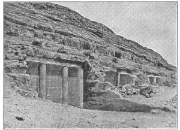

60
THE OLDEST HOUSE
最古老的房子

SOME men were talking about houses. “How old is your house?” one of them asked me. “Five years old,” I replied. “Well, my house is over a hundred years old,” said the man. “It’s in Massachusetts.”
“Only a hundred years old!” exclaimed another man. “My house is two hundred years old. It’s in Virginia.”
“That doesn’t seem old to me,” still another man said. “My house is four hundred and fifty years old.”
Each one was trying to tell a bigger story than the other.
“Four hundred and fifty years old!“ I cried. ”How can that be? That’s before America was discovered, before there were any white men’s houses in this country.”
“It isn’t in America,” he replied. “It’s in England. I’m an Englishman.”
“Oh, well, that’s different. If you count houses abroad, I’ve been in a house that’s a thousand years old. It’s a Church. It’s in France.”
“Only a thousand years old?” The Englishman seemed bent on going me one better.“I’ve been in a house built two thousand years ago. It’s in Greece—a temple. They call it the Parthenon.”
“Well,” said I，not to be outdone, “I can beat that. I’ve been in a house that is five thousand years old—a house built for the dead. It’s in Egypt. They call it a pyramid.”
“You win,” said the Englishman. “No one can beat that.”
And that’s true. The oldest houses in the world are the pyramids in Egypt——houses for the dead. But why are the oldest houses, houses for the dead? Where are the houses of the living—the houses they built five thousand years ago to live in?
They’re all gone—long, long ago—and the reason is this: A man expected to live only fifty years or so and he built his house out of wood or mud bricks to last only as long as he lived, so the wood houses have all rotted away and the houses made of mud brick have turned back to dust. But he expected to be a long time dead, so if he were a king, he built a house for himself to be dead in and he built it so that it would last till Judgment Day.
You see, the Egyptians, hundreds of years before Christ, believed in resurrection. They believed their dead bodies would sometime come to life again, so they built the pyramids out of stone to last till then, and they had their bodies embalmed—that is, made into what we call mummies—to last till then also. Now, the pyramids are still there in Egypt, but the mummies that were once in them are not in them any more. They have been stolen or have been taken away and put in museums—in museums for any one and every one to gaze upon, in spite of all the care that the tomb builder tool to have his body undisturbed till Judgment Day. We do not pay so much attention to how and where we are to be buried. Even kings and queens nowadays are buried in the ground with a monument over them or in a simple tomb.
There were over a hundred pyramids built near the river Nile by Egypt’s rulers, but the largest is one built by King Cheops about three thousand years before Christ was born. That’s about five thousand years ago. The pyramid is almost five hundred feet high. It used to be four hundred and eighty, to be exact, but the top has been broken off and it is now only four hundred and fifty-one. In spite of that, it is by far the largest stone building in the world—a mountain of stone.
The pyramid of Cheops is built of solid rock on a natural rock foundation, but as there was no rock near by for building the pyramid itself, it had to be brought from quarries some of which were fifty miles away and some five hundred miles away. Then it had to be dragged fifty miles or five hundred miles from the quarry. Some of the huge stones weighed more than a loaded freight car and it took several years to drag the rocks to the site of the pyramid.
You see, there was no machinery in those days—no pulleys or derricks, no tracks or trucks, no engines or mechanical contrivances— such as we have nowadays to lift and carry huge loads, so that every block of stone had to be pushed or pulled by sheer brute force. Hundreds of men tugged from in front and hundreds shoved from behind. And then each block had to be lifted and moved into place. Probably a roadway was built right up the side of the pyramid to where the block could be slid into position. It is supposed to have taken twenty years to build Cheops’s pyramid and they say the king employed over a hundred thousand men to do the job.
The outside of the pyramid when it was finished was smooth, polished stone— perhaps in bands of different colored granite, but long ago all this covering of polished stone was stolen and carried off to make other buildings, so that the sides of the pyramid are now rough, irregular steps, each one several feet high, and you can climb to the top on any side simply by climbing from one step to another.
The Great Pyramid, as we call it, if it were sliced through the center like a piece of cheese, would show three small rooms one above the other and some slanting passageways to the three rooms. The rest would be solid rock. See the picture below.
The topmost room was for the king’s own mummy and in order to make sure that the weight of stone above would not crush through the room in which his mummy was, he had five ceilings of stone built, one above the other, with a space above each ceiling and then a slanting ceiling above them all. The two lines slanting upward from his room to the sides are small air passages. The room underneath his own was for his queen and the one under that, in the cellar or foundation of the pyramid was, perhaps, for nobody. That was for a while the great mystery of the Great Pyramid, but now we feel we have guessed the riddle. You see, there was only one passageway starting from the outside. From this one passageway another secret passageway led off to the king’s and queen’s chambers, but the passage that went straight ahead led down to the room that had nothing in it. Cheops was afraid that after he and his queen had been buried away in this tomb, some enemy of his might try to steal their mummies and so prevent them from coming to life again on Judgment Day. So he had all the passageways filled up with stone after he was buried and then the entrance covered so that no one could find where or how to get in.
But Cheops figured that if some one did find the entrance and began to dig out the passageway down to the cellar, this straight passage would lead him off the track and he would keep on down and not see the other secret passageway leading off to the king’s and queen’s chambers. Then when he did reach the empty room, he would find nothing—an April fool joke.
But in spite of all these extraordinary precautions that Cheops took to prevent any one’s finding his mummy, all these passageways and rooms were later discovered and opened and the mummies were removed—to where, by whom, no one knows—and that was a joke on Cheops.
Though, as I told you, there are over a hundred pyramids, not all of them have the true pyramid form. That is, not all of them are triangular. In some pyramids the sides slope in very little at the bottom and then, as if the builder had changed his mind, they slope in faster toward the top. The Pharaoh who built his tomb like this may have been sick and afraid he was going to die before the pyramid was finished and so had to hurry up. In some of the pyramids the sides zigzag toward the top in several giant-like steps, Perhaps the Pharaoh just wanted to have his pyramid different from all the others. Some of the pyramids are built of brick instead of stone. Perhaps the Pharaohs who built such pyramids were poor.
And so, the three greatest pyramids stand close together on the sands of the desert in giant majesty as they have stood for ages past and will for ages and ages to come, to thrill the beholder with their sublime grandeur.
Mere size doesn’t make a thing beautiful. A big thing may be very ugly. But the pyramids are monuments to man’s attempt to make something enduring, lasting, and the builders succeeded in making the most permanent, lasting thing ever built by man. The pyramids are also monuments to their belief in a life after death. And when we think of the millions of people that have come and gone, lived and died, since these mighty monuments were built, and the countless millions that will come and go while the pyramids still stand on, it sets us thinking of the shortness of our little lives and the awesome length of eternity—and that is ART.

No.60-2 TOMB AT BENI-HASAN （贝尼哈桑墓）
Courtesy of The University Prints
All the pyramids were tombs, but not all tombs were pyramids. That is—some tombs were not pyramid-shaped at all, but just stone buildings with flat tops. Furthermore, some tombs were simply caves cut into the rock cliffs on the west side of the Nile. These rock tombs were hollowed out on the west side of the river so that the entrance would face east, toward the rising sun. The Egyptians never faced their tombs any other way, for they thought the Sun God could not wake the dead on Judgment Day unless the tomb faced him as he rose in the east. If the tomb faced him he would wake these people who were dead, just as the rising sun shining into east windows wakes a sleeper in the morning.
Here is such a rock-cut tomb—one of the most famous—a tomb at Beni-Hasan:
It is particularly interesting because it has two colunms in front, two columns cut out of the selfsame rock. None of the pyramid tombs had columns.
So these are the oldest houses in the world. Houses of the dead, Pyramids and tombs.
【中文阅读】
一些人正在讨论房子。“你的房子有多少年数了啊？”其中一个人问我。“五年了，”我答道。“哦，我的房子已经有一个多世纪的历史了。在马萨诸塞州。”
“也不过才一百多年嘛！”另外一个人大声说道，“我的房子已经有两百年历史了。在弗吉尼亚州。”
“好像没我的老呀，”又一个人说道，“我的房子已经有四百五十年历史了。”
每个人都竭力讲出一所历史更悠久的房子，来超过对手。
“四百五十年啊！”我惊呼，“怎么可能呢！那时候还没发现美洲大陆，还没有一个白人到美国来居住呢！”
“那房子不在美国”，他补充道，“在英国。我是英国人。”
“哦？是吗，那就另当别论了。如果你指的房子还包括国外的，那我曾经还在一个有一千多年历史的房子里待过呢。那是一座教堂。在法国。”
“才一千多年啊。”这位英国人似乎跟我较上劲了。“我曾去过一栋有两千多年历史的房子呢。那是希腊的一座神庙。人们称它为帕台农神庙。”
“哼，”我不肯认输地说道：“那有什么，我还到过一座有五千多年历史的房子呢——一个专门为死人建造的房子。在埃及，人称金字塔。”
“你赢了，”那位英国人说，“没有哪个房子能超过那个了。”
千真万确。世界上最古老的房子就是埃及的金字塔——为死人造的房子。为什么最古老的房子是为死人建造的呢？那五千年前建造这种房子的人，他们当年居住的房子又在哪里呢？
那些房子在很久，很久以前，就已灰飞烟灭了。原因是这样的：那时的人一般有指望也只活到五十岁左右。他们用木头或土砖盖房子，住到死的时候，木屋腐烂了，土砖也归回尘土了。但他们却指望死后长久存在，所以如果是国王，他就为自己建造死后的住房。他建造这房子以便一直维持到最后的审判日。
要知道，埃及人在基督诞生几百年前就已经相信死而复活了。他们相信他们的尸体终有复活的一天，因此，要维持到那一天，他们就用石头来建造金字塔，并且对尸体作防腐处理——就是说，把它们制作成我们所称的木乃伊——也能保存到那一天。如今，金字塔在埃及依然屹立，但曾经在里面的木乃伊却消失不见了。他们或被盗走，或被运走放进了博物馆——在博物馆里，任何人，甚至每一个人都能一饱眼福，尽管这座坟墓建造者的初衷是使其尸体在审判日到来之前都不受打扰。我们不大在意自己死后到底怎样埋葬，在哪埋葬。如今甚至国王和女王都是埋在地下，上面立一个墓碑，或者埋在一个简陋的坟墓里。
埃及的统治者们在尼罗河沿岸总共建造了一百多座金字塔，而最大的一座是由基奥普斯王在基督诞生三千多年前建造的。它至今大约已有五千多年历史了。这座金字塔差不多有五百英尺高。确切地说，它本来高四百八十英尺，但由于顶部塌掉一部分，现在只有四百五十一英尺了。尽管如此，它仍然是目前世界上最大的石头建筑——一座石山。
基奥普斯金字塔是建造在一块坚硬的天然石基上的。但由于当时附近没有可供建造金字塔的岩石，所以不得不从采石场运来，近的有五十里路程，远的甚至有五百里。有的石块甚至比一辆满载的货物车还要重，需要花费好几年时间才能把这些石块运到金字塔工地。
知道吗？那时没有机器——没有滑车，没有起重机，没有轨道，没有卡车，没有发动机，更没有其他什么机器发明——不像我们现在有升降和运载大型货物的工具，可以单靠纯机械外力运输每一块石料。那时候，重物搬运全靠人力，几百个人在前面拉，几百个人在后面推，这样来把石料搬运到目的地。当时金字塔旁可能事先修筑了一条路，用以拖运石块。据推测，基奥普斯金字塔花费了二十年左右的时间，动用了十万名劳工才得以建成。
金字塔的外部在刚建成时表面平滑、细腻——或许是因为大量使用了不同颜色的大理石，可是没多久，这些外部抛光的大理石却惨遭偷盗，被偷运作了其他建筑材料，导致现在金字塔的侧面粗糙不堪，出现不规则的石阶。每一级石阶都有好几英尺高，从任何一面你都可以轻而易举地拾级而上，爬上金字塔顶端。
我们把基奥普斯金字塔称作大金字塔。如果我们像切奶酪一样把这座金字塔从中间切开的话，你将会看到三个小房间紧紧相依，而且还有过道通往每个房间。其余的部分就是坚硬的岩石了，见图60-1。
最顶端的房子用以放置国王的木乃伊。为了保证顶端石头的重量不会压垮盛放国王遗体的房间，于是就用石头把顶端建成五层，层层相叠，中间留出空间，最上层呈斜坡状。而连接房屋和金字塔侧面的两条向上倾斜的通道是两个通风口。国王房间的下面是王后的房间，再往下即金字塔的地下室或地基里的房间，或许空无一物。这曾一度成为大金字塔的一个谜团，但如今此谜团已被解开。如图所示，该金字塔只有一条通道通向外界。这条通道从侧边岔开一条秘密小道，通往国王和王后的房间。由这条通道一直往下就到达那间空屋。基奥普斯害怕自己和王后死后埋葬此地时，他的敌 人会偷走他们的木乃伊，在最后审判日阻止他们的肉体复活。所以让人埋葬他和王后之后，把每一条通道都塞满石头，并掩盖好每一个出口，这样就没人知道如何找到他们了。
基奥普斯盘算万一出口真的被人发现了，所以就把通道一直挖到地下室，这条笔直的通道会把人一直往下带，越带越偏，这样就找不到另外那条通往国王和王后房间.的密道了。即使最终到达那间空屋，却一无所获——就像是愚人节开的玩笑。
尽管基奥普斯挖空心思采取了万无一失的预防措施，以防被人找到他的藏身处，但所有的通道还是被后人发现了，房间被一一打开，木乃伊也被挪走——被谁挪走，挪到哪里，却无人知晓——这简直就是拿基奥普斯开玩笑！
如我所述，尽管目前现存的金字塔有一百多座，但并不是每一座都是真的按金字塔形状而建造的。也就是说，并不是所有的金字塔都呈三角形。有些金字塔的底端也并不那么倾斜，可能是建筑师后来改变了主意，建到上方开始加剧倾斜。法老在建造金字塔的时候也许正病危，害怕自己在金字塔竣工前就要驾崩，所以加快了进度。在某些金字塔的内部，侧边有一些巨大的台阶弯弯曲曲地向上蜿蜒。或许法老只是希望自己的金字塔能与众有所不同。还有的法老也许是比较贫困，他们的金字塔由砖块而不是岩石建成。
在沙漠中紧紧伫立的三座大金字塔依然威严而神圣，穿越了千古，还将流芳百世。它的壮丽与威严让观赏者震撼。
庞大不等于雄伟。庞大也可能面目可憎。但是金字塔成了人类历史的丰碑，实现了人类建造坚固持久建筑物的愿望，宣告了当时建筑家们的成功。金字塔也是这样一座丰碑，证明了埃及人死后可以复活的信念。掩卷沉思，历史的丰碑虽然竖立了，但芸芸众生却在这儿繁衍生息，生老病死，接着是一批又一批的生命在这重演，来了又走了，而金字塔却伫立依然，这不得不让我们感叹生命的短暂，敬畏永恒之漫长。而这永恒，就是艺术。
所有的金字塔都是坟墓，但坟墓不一定都是金字塔。也就是说，有些坟墓压根儿连金字塔的皮毛都沾不上，只不过是一些带有小平顶的石建筑罢了。而且，在尼罗河西岸有一些坟墓只不过是在石崖上凿出的洞窟。这些石墓开凿在尼罗河西岸，好使墓口朝东，向着升起的太阳。埃及人的坟墓毫无例外都是这样设计的。他们相信，只有坟墓面朝太阳升起的东方，太阳神在最后审判日那天才可以唤醒沉睡的亡灵，就像初升的太阳在早晨把阳光射进东边的窗户会照醒沉睡者一样。
图60-2是尼罗河西岸著名的石窟墓之一——贝尼哈桑墓。
特别有趣的是，墓的正面有两根圆柱，这两根圆柱是从同一块石头开凿出来的。而金字塔形状的坟墓一般不用柱子。
以上就是世界上最古老的房子，为死人建造的房屋。它们是金字塔和坟墓。